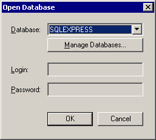
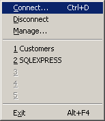
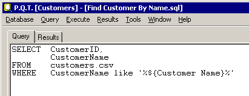
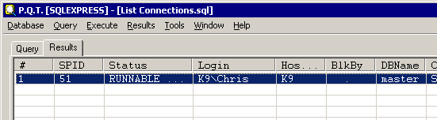
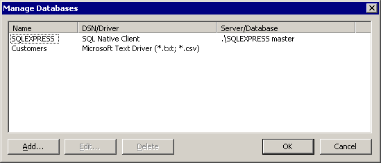
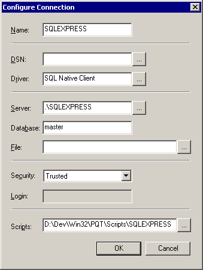

This is a fairly simple SQL query tool with one main objective - to allow you to parameterise your queries client-side. Also, by associating scripts with a database via a solder, you can then launch a query directly from a menu item and have the tool prompt you for the relevant parameters all in one go. It was originally written over 10 years ago as a test harness (like all my GUI tools) for the ODBC facade in my In-Memory Database Library. Although tools like TOAD and SSMS are far ahead in all the other areas I still find this tool invaluable during support as you'll see later on when I discuss how I use it.
Before you can execute a query you'll need to open a connection to the database which is done by the "Database | Connect..." command. Sadly you'll notice that the list of configured connections is empty so you need to create one by clicking the "Manage Databases..." button. The database list can also be managed later by using the "Database | Manage..." command.

Once you have configured the database connection you can then select it from the list and click OK. PQT remembers your last five connections so that you can quickly select them from the MRU list on the "Database" menu.

As you can see the main view has two tabs, one for the query and another for the results. The query pane is a simple Notepad style editor window and the results a classic ListView in report mode. For non-parameterised queries you can just enter the SQL and select "Execute | Current" to run it. The pane will automatically switch to the results window where you should see a grid with the result set.

The "Execute | File..." command is just a shorthand for loading a query via "Query | Open..." and then invoking "Execute | Current". With the introduction of the per-database scripts folder this has become less useful.
The "#" column in the results window is the row number in the result set and the rest is the normal tabular output. If you want to use the value from a cell or the name of a column in your query you can just right-click on the cell and you'll be presented with a menu of those two options.

If you have a wide result set and want to see a single row in more detail you can double-click it and the results for just that row will appear in a separate window that displays one column value per line so large strings are easier to read. Once again you can right-click to get the "Copy Value/Column Name" menu. If you're looking for a value in a large result set there is the "Results | Find..." command for searching. Use "Results | Find Next" to locate the next match. Of course you'll find it much easier if you use the standard CTRL+F3 & F3 keyboard accelerators. The results can be persisted either by saving them to a CSV format file using the "Results | Save..." command or by printing them with "Results | Print".
Once you have a specific query working you can then think about generalising it. This is a simple step that just involves replacing any 'variables' with a symbolic name enclosed in the tokens ${ and }, e.g.
SELECT *
FROM Customer
WHERE CustomerID = ${Customer ID}
Then whenever you run the query you'll be prompted for the values for any variables like this:-
PQT will remember the value for any variables and make that the default the next time you run any query with the same variable names. Just like in programming you'll find it better to use more meaningful names (e.g. ValueDate instead of just Date) as you'll carry more default values over from query to query.
A query is not limited to a single variable, you can have as many as you like, but naturally they have to have unique variable names. This also means that you can reference a variable multiple times within the same query to inject its value into different clauses.
One thing to watch out for is the correct quoting of strings. It's very easy to replace a string constant (including the quotes) with a variable instead of just replacing the text within the constant, e.g.
SELECT *
FROM Customer
WHERE CustomerName = '${Customer Name}'
There are a few application settings accessible via "Tools | Options..." that affect the results window. The "Min Column Width" and "Max Column Width" values control how small or big each result column can get by default. These stop one character fields getting lost and mammoth text strings dominating the output. You can also control what string value is used to represent a NULL value and whether the ListView gridlines are enabled or not.
The "Manage Databases" dialog allows you to configure the data sources you want to query. Basically the information you enter is what is bundled into the ODBC connection string. Although it's ODBC based you do not have to configure a DSN as this can be done on-the-fly using the settings you provide in PQT. The view shows a summary of the currently configured databases. Use the Add, Edit and Delete buttons to administer them.

The dialog presented when adding a new database or editing an existing one has a number of fields, some of which are optional. Which fields are mandatory depends on whether you're going to use an underlying DSN that has been previously configured in odbcad32. The alternative is just to configure the data source directly in PQT (this does not create a DSN).

Here is a description of the fields:-
| Field | Description |
|---|---|
| Name | The logical name for the database, e.g. DEV, TEST |
| DSN | A pre-configured user or system DSN |
| Driver | The name of an ODBC driver, e.g. SQL Native Client |
| Server | The hostname of the remote database server |
| Database | The name of the actual database |
| File | The name of a database file, if file-system based |
| Security | The security model in use - None, Login, Trusted |
| Login | The default login name, if using Login based security |
| Scripts | The folder where all SQL scripts are stored |
Effectively you have two choices - configure a DSN using the ODBC Admin tool and then reference it here via the DSN field or full specify the database in PQT starting with the Driver. With the latter option you're then likely to be going for a full on RDBMS (e.g. SQL Server), in which case you supply a Server and Database, or a file-system based solution (e.g. Access) in which case you provide a File. The "Scripts" folder listed at the end is how you populate the "Execute" menu with shortcuts. When you save queries you will prompted to save in this folder by default and what you use for the filename is what is shown in the menu (excluding the .sql extension) just like your Favourites in IE. Sadly this version does not support folders as well for grouping queries. If you have multiple databases for the same system, e.g. DEV, TEST, PROD then you probably want to point all the Scripts entries to the same folder so that the same queries will be accessible in all.
As I said at the beginning, this tool is a far cry from the modern query tools we use every day, so I thought I would outline how I it use to show why it's still in my 'developers/support toolbox'.
In the kind of systems I work on a support question often involves digging around in the database moving from table to table as I chase the issue from its original request back to the input data for a specific entity. It's very common to use simple integral values as the primary keys for entities, like customers, so there tends to be a lot of copy and pasting of numbers from the result set of one query into the next and that's where PQT comes in.
Say I start with the following report style query to give me an overview of system health. This would be saved in the Scripts folder as, say "Report Error Message Counts.sql":-
SELECT c.ErrorMessage,
COUNT(*)
FROM Calculation c
GROUP BY c.ErrorMessage
I may notice that we have a new error or maybe a raise in the occurrence of an existing one and I'd like to track down a request that exhibits it so I reproduce and fix it. The first step is to right-click on the cell with the error message and select "Copy Field Value". Then I would click the "Execute" menu and select another pre-saved query called "Find Calculations with Error.sql". The query would look something like this:-
SELECT *
FROM Calculation c
WHERE c.ErrorMessage LIKE '%${Error}%'
From here I would be able to get another ID, this time for the request that generated the task and I would do the same again, i.e. copying the ID and then running another pre-saved query probably called "Find Request by ID.sql". Of course this example is somewhat contrived as I would really use queries with a bunch of joins so that I don't need quite so many steps to get at pertinent information, but I usually need at least a couple of scripts to get there.
This application is freeware - you get what you pay for, nothing more, nothing less.
The full source code (C++) is available from my web site listed below.
The "Help | About" dialog also contains my contact details. Please check the web site for updates.
Email: gort@cix.co.uk
Web: www.cix.co.uk/~gort
Chris Oldwood
29th September 2010